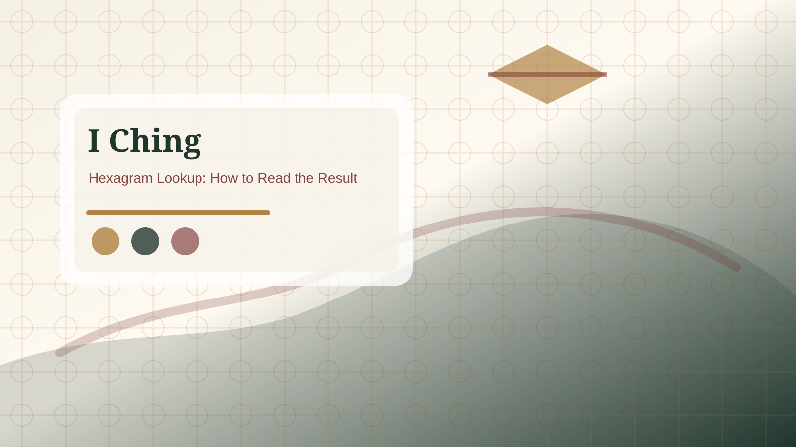

Relating hexagram
Relating hexagramRelating Hexagram Guide
The relating hexagram shows the pattern created after changing lines move. It gives context for where the situation may be heading.
Primary pattern first
Always begin with the primary hexagram. It describes the present condition around the question. If you skip this layer, the reading loses its foundation. The primary hexagram names the field you are standing in: conflict, waiting, return, progress, limitation, fellowship, obstruction, or another pattern.
Before reading the relating hexagram, summarize the primary hexagram in one plain sentence. Ask what it says about timing, pressure, support, risk, or restraint. This keeps the rest of the reading connected to the actual question.

Relating pattern second
The relating hexagram is produced by the changing lines. It is not a second, unrelated answer. It describes a possible direction or background tendency that appears when the active lines shift. If the primary hexagram says where you are, the relating hexagram suggests where the situation may lean if you handle the pressure points well.
For example, a primary hexagram about Return moving toward Peace would suggest that a cleaner restart may open cooperation. A primary hexagram about Conflict moving toward Limitation might suggest that boundaries are needed before progress is possible. The meaning comes from the relationship between the two patterns, not from either name alone.
Common mistakes
Beginners often jump to the relating hexagram because it feels like the future. That can make the reading too simple. Another mistake is treating the relating hexagram as guaranteed. It is better to ask what conditions would allow that direction to appear and what behavior might block it.
Practical use
After reading the relating hexagram, choose one practical question: what would make this direction more likely in real life? The answer might involve waiting, repairing trust, setting a limit, gathering support, clarifying facts, or stopping an action that has become excessive.
Primary vs relating sequence
The primary hexagram is the reading's starting point. It names the present field around the question. The relating hexagram is created only after changing lines move, so it should be read as a direction or tendency, not as a separate replacement answer. The sequence matters: current pattern, active movement, possible direction.
A useful method is to write one sentence for each layer. First: the current situation looks like... Second: the active pressure is... Third: the direction may become... This keeps the relating hexagram connected to the original cast instead of turning it into a prediction detached from the question.
Movement direction, not fixed future
The relating hexagram can be tempting because it feels like the future. Read it more carefully. It points to a possible movement created by the changing lines. If the primary hexagram is Conflict and the relating hexagram is Limitation, the point is not that the future is permanently limited. The point may be that boundaries, rules, or measured speech are needed before the conflict can settle.
This approach makes the reading more useful because it asks what conditions would support a better direction. It also prevents exaggerated claims. A relating hexagram should help the reader review behavior, timing, and risk, not outsource responsibility.
When not to overread the relating hexagram
Do not overread the relating hexagram when the question is vague, the emotional stakes are high, or the changing lines already give a clear warning. In those cases, return to the primary pattern and the active lines first. The relating hexagram can wait until the reader understands what is actually moving.
A good relating-hexagram note ends with a condition: this direction becomes more likely if... That condition might involve waiting, repair, clear limits, better information, or a smaller next step.